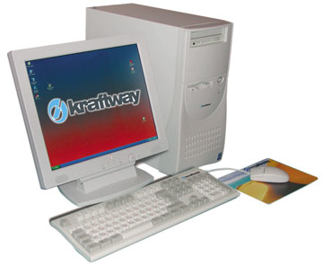
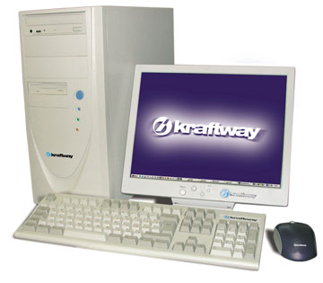
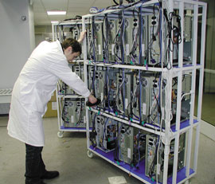

Андрей Ездаков
Основная масса компьютеров, с которыми так или иначе сталкиваются пользователи на работе, вполне отвечает определению "корпоративного рабочего места" (КРМ). Сюда относится широкий ассортимент устройств, начиная с сетевого компьютера, или "тонкого клиента", и заканчивая мощными, возможно, даже многопроцессорными рабочими станциями.
Параметры устанавливаемых КРМ определяются несколькими факторами, среди которых основную роль, очевидно, играют необходимая функциональность рабочего места и финансовые возможности организации. Исходя из первого и с учетом второго формируется компьютерный парк корпоративной информационной системы (КИС), основу которой и составляют КРМ.
Естественно, множество производителей компьютерной техники на рынке готовы предложить предприятиям свои продуктовые линейки с широким выбором как в функциональном, так и в ценовом диапазоне. В России представлена продукция практически всех ведущих мировых производителей и целого ряда отечественных. Один из них - компания Kraftway (http://www.kraftway.ru), известная многим российским потребителям прежде всего как поставщик серверных решений и устройств хранения данных. Однако, кроме этого, Kraftway ежегодно производит и продает десятки тысяч компьютеров, которые можно отнести к категории КРМ. Это и мощные рабочие станции, и традиционные настольные ПК, и даже тонкие клиенты.
KraftwayРаботая на отечественном ИТ-рынке с 1993 г., компания Kraftway заслуженно пользуется репутацией одного из технологических лидеров. Спектр выпускаемой ею продукции чрезвычайно широк и включает настольные ПК, рабочие и графические станции, серверы уровня рабочих групп и уровня предприятия, высоконадежные вычислительные системы в индустриальном исполнении, активные контрольно-кассовые машины. Компания имеет прямые соглашения с мировыми производителями комплектующих и ПО, что позволяет ей интегрировать в свои продукты самые последние технологические достижения. |
Решения в области КРМ
Стратегическими заказчиками компании традиционно выступают государственные структуры. Однако в последнее время, наряду с поставками оборудования в рамках федеральных проектов, Kraftway заметно активизировала работу с мелкими и средними корпоративными клиентами. С целью расширить это направление своей деятельности компания приступила к построению партнерской сети в регионах России.
Основную массу продаваемых Kraftway КРМ составляют компьютеры двух семейств - GEG Popular и GEG Prestige.
Первое семейство представлено недорогими компьютерами, подходящими как для использования в офисе, так и для домашних пользователей. В этих настольных ПК используются процессоры как компании Intel - Celeron и Pentium 4, так и AMD - Athlon XP и Duron. Естественно, используются и базовые наборы микросхем от различных производителей: VIA, SiS, Intel, AMD. Объем оперативной памяти и емкость жесткого диска также сильно разнятся в отдельных моделях семейства. Основное же свойство всех ПК, объединенных логотипом GEG Popular, - невысокая стоимость.
|  | Недорогое офисное решение для КИС - GEG Popular.
|
Следует отметить, что компания Kraftway формирует свою продуктовую линейку иначе, чем большинство производителей. Появление новых моделей связано не столько с неким внутренним "волеизъявлением" компании, привязанным к появлению новых компонентов (например, процессоров или модулей ОЗУ) либо форм-факторов, а с потребностью рынка. Иными словами, если компания "ощущает" возникновение потребности в компьютерах с определенной комплектацией, она проводит соответствующие исследования в своей бета-лаборатории и тогда предлагает пользователям новую конфигурацию.
Если спрос на новый вариант ПК растет, то данная конфигурация закрепляется в модельном ряду компании. Такой метод действий был отработан Kraftway на рынке серверов и теперь успешно переносится на настольные ПК. Он оправдан тем, что большинство заказчиков не гонятся за новомодными решениями, а предпочитают проверенные конфигурации с достаточной производительностью и разумной ценой. Для тех же, кому важны скорейшие внедрения новых технологий, компания готова собрать и протестировать нужную конфигурацию "под заказ".
Семейство высокопроизводительных одно- и двухпроцессорных рабочих станций GEG Prestige формируется таким же образом, как и GEG Popular, но предназначается для решения специальных задач, предъявляющих повышенные требования к аппаратным ресурсам. Основная отличительная черта моделей этого семейства - мощные процессоры в сочетании с большим объемом оперативной памяти; высокопроизводительная графическая подсистема; высокая скорость работы с данными; совместимость с соответствующим периферийным оборудованием. Кроме того, важной особенностью компьютеров GEG Prestige считается легкость модернизации и увеличения производительности системы.
В компьютеры GEG Popular устанавливаются более мощные процессоры (Intel Pentium 4, Intel Xeon DP и AMD Athlon MP) с тактовыми частотами до 3 МГц и ОЗУ типа DDR (объемом обычно 512 Мбайт). Сфера применения моделей данного семейства самая широкая - от компьютеров для "продвинутых" домашних пользователей до графических станций и систем для научных и инженерных расчетов.
|  | Высокопроизводительная рабочая станция серии GEG Prestige.
|
Компьютеры Kraftway обоих семейств поставляются с трехлетней гарантией и с предустановленной ОС Microsoft Windows XP. В комплект поставки входит также компакт-диск с лицензионной копией операционной системы. Подлинность продуктов корпорации Microsoft подтверждает соответствующий сертификат COA (Certificate of Authenticity).
| Специалисты Kraftway считают, что современное КРМ - это сетевой компьютер с разумной стоимостью, но высокой надежностью и большим сроком гарантийного обслуживания, т. е. компьютер с низкой стоимостью владения. |
Исследования и разработки
В Kraftway давно осознали, что невозможно развивать бизнес компании без проведения собственных исследований. Для этого было создано несколько лабораторий, ведущих исследования в области новейших компьютерных технологий. В них разрабатывались успешно затем внедрявшиеся методики проектирования компьютерных систем, выбора поставщиков и подбора компонентов для производства, определялись стандарты сборки и тестирования компьютеров.
Компания тратит значительные средства и прикладывает немалые усилия для поддержания конкурентоспособности своих изделий в сравнении с продукцией признанных зарубежных производителей. Департамент разработок и проектирования Kraftway на регулярной, официальной основе осваивает новейшие технологии таких лидеров индустрии, как Intel, AMD, Microsoft и т. д., что позволяет компании выпускать современные системы одновременно с мировыми грандами.
Кроме того, в настоящее время лаборатории компании ведут перспективные разработки в следующих направлениях: центры обработки данных; системы хранения данных; высокопроизводительные вычислительные кластеры; перспективные средства коммуникаций. Консолидированный бюджет Kraftway (включающий средства партнеров по технологическим программам), направленный на проектирование и разработки, на 2003 г. запланирован в размере 2,7 млн долл.
Особенности производства
Kraftway, уделяющая много внимания вопросам качества, первой среди российских ИТ-компаний получила в 1996 г. сертификат системы менеджмента качества ISO 9001. Его действие неоднократно подтверждалось в ходе независимых аудиторских проверок, последняя из которых прошла в сентябре 2002 г. По ее результатам компания вновь подтвердила соответствие имеющейся системы управления качеством международным стандартам и получила сертификат соответствия требованиям ISO 9001:2000.
Стандарты ISO 9000В 1987 г. Международная организация по стандартизации (ISO - International Standarts Organization) утвердила комплекс стандартов серии 9000. Эти стандарты определяют требования к системам качества на предприятиях и используются как в условиях контрактных отношений между партнерами (например, при установлении торговых связей для оценки надежности поставщиков), так и при неконтрактных отношениях (для оценки и совершенствования собственных систем качества предприятий по их собственной инициативе). Соответствие системы качества требованиям стандартов ISO рассматривается как определенная гарантия того, что предприятие способно стабильно производить продукцию надлежащего качества в соответствии с требованиями заказчика. |
Область сертификации системы менеджмента качества Kraftway охватывает все важнейшие аспекты жизненного цикла продукта, включая закупки, разработку, производство, продажи и обслуживание средств вычислительной техники. Новый отечественный сертификат за No РОСС RU.ИС11.К00083 выдан Kraftway Всероссийским научно-исследовательским институтом сертификации сроком на 3 года. Этот документ удостоверяет, что система менеджмента качества компании применительно к проектированию, разработке и производству средств вычислительной техники и ПО соответствует условиям стандарта ISO 9001:2000 - самого жесткого на сегодняшний день, который по сравнению с предыдущей версией содержит дополнительные требования по управлению ресурсами, измерению и мониторингу системы качества. На первый план в нем выведены вопросы определения ожиданий клиента и удовлетворенность последнего.
Сейчас производство оборудования с торговой маркой Kraftway, сертифицированное по стандарту качества ISO 9001, осуществляется в промышленных условиях на собственных мощностях компании в Москве. Это высокотехнологичный комплекс, отвечающий современным стандартам в области: построения технологии управления процессами; безопасности и эргономичности рабочих мест; качества выпускаемой продукции.
В производственных помещениях общей площадью 1200 м2 работает около 100 сотрудников различных специальностей и квалификации. В штатном режиме работы ежедневный выпуск составляет до 1000 единиц разнородной продукции, включая рабочие станции, сложные серверы и контрольно-кассовые машины. Эффективность использования производственных мощностей обеспечивается их стапельно-конвейерной структурой, современной системой автоматизированного управления с фиксацией персональной ответственности за выполнение каждой операции с изделием.
Производственный процесс разбит на несколько основных участков, первый из которых - участок сплошного (100%-ного) входного контроля комплектующих по ГОСТу 24297-87 "Входной контроль качества продукции".
По окончании сборки вся продукция подвергается трехступенчатому выходному контролю, включающему наряду со статистическим контролем по ГОСТу Р 50779.51-95 "Непрерывный приемочный контроль качества по альтернативному признаку" стрессовые проверки функционирования изделий при повышенных температурах (в термокамере при 40°C), которым подвергается вся выпускаемая продукция. Для этого используются специальные операторские места удаленного контроля изделий в сочетании с тестовыми методиками собственной разработки.
Ядро производственного процесса - оригинальная автоматизированная система управления (АСУ), позволяющая синхронизировать и контролировать выполнение различных процессов без участия дополнительного управленческого персонала. Благодаря этому уменьшается влияние на технологический процесс человеческого фактора: все операции жестко регламентированы, каждая из них регистрируется на рабочих местах и специальных терминалах, все протоколы тестирования каждого изделия в производственном процессе автоматически сохраняются в электронном виде для последующего пятилетнего хранения.
Рабочие инструкции и карта сборки предоставляются в электронном виде в момент регистрации начала операции в соответствии с введенным серийным номером изделия и персональным кодом сотрудника, связанного с конкретной технологической операцией. Благодаря использованию современных технологий - бесконтактных смарт-карт и штрихового кодирования регистрационная процедура занимает считанные секунды.
Внедренная на производстве Kraftway технология обеспечивает параллельный выпуск разнородной продукции без существенного простоя производственных мощностей и увеличения риска механических ошибок. Сотруднику не нужно запоминать большой объем информации, а в случае несоответствия фактических параметров заданным перед запуском изделия в производство АСУ просто не позволит завершить технологическую операцию.
|  | В производственном цехе Kraftway.
|
Перспективы расширения производства
Потребности отечественного рынка в надежной и разнообразной компьютерной технике, в том числе в КРМ, продолжают расти. Поэтому Kraftway планирует расширение своих производственных мощностей. Еще летом 2002 г. компания объявила о начале строительства в Обнинске производственно-логистического комплекса нового типа общей площадью 22 тыс. м2. Его основу составляет автоматизированный склад, способный быстро перерабатывать большие объемы комплектующих и оборудования, а также хранить их в течение длительного времени.
Вторым компонентом комплекса станет сборочное производство с проектной мощностью 1,5 млн единиц продукции в год (при работе в одну смену). Офисный центр поддержки установленных решений со структурно-технологическими подразделениями должен будет контролировать деятельность различных составляющих комплекса, включая работу транспортного предприятия. Предполагаемый объем инвестиций в этот проект - 15 млн долл.
В сборочном цехе площадью 9 тыс. м2 будут размещены пять независимых технологических линий. Комплекс строится с расчетом интенсивного использования новых технологий контроля и управления. Отличительными особенностями производства станут высокий уровень мобильности и независимости сборочных линий, отсутствие вертикальных транспортных соединений (все процессы будут проходить в одной плоскости) и частичная роботизация. Все это позволит Kraftway сократить издержки на хранение и производство продукции и тем самым повысить свою конкурентоспособность.
По мнению руководства компании, комплекс в Обнинске, ввод которого в эксплуатацию намечен на I квартал 2004 г., заложит основу для развития экспортных планов Kraftway и станет стартовой площадкой для запуска новых продуктов, ориентированных на массового пользователя.
Новый производственный комплексПо словам руководства компании Kraftway, необходимость создания комплекса в Обнинске обусловлена рядом причин. Во-первых, в последние годы компания сталкивалась с проблемой нехватки инфраструктурных ресурсов для выполнения крупных контрактов (речь идет о десятках тысяч единиц продукции). Во-вторых, высокая относительная стоимость владения складскими и производственными помещениями в Москве (вне зависимости от формы собственности на здания и сооружения) приводит к тому, что использовать московские мощности для сборки массовых продуктов и их хранения становится крайне невыгодно. Поэтому компания рассчитывает на примерно четырехкратное снижение издержек в производстве каждой единицы продукции при переезде в новый подмосковный комплекс. |
Сервисное обслуживание
В 2002 году компания взяла курс на расширение своего присутствия в регионах, и теперь пользователи могут приобрести оборудование Kraftway у официального партнера компании в своем регионе. На сегодняшний день охвачено восемь регионов: Ростовская, Нижегородская, Кемеровская, Калининградская и Амурская области, Красноярский и Ставропольский края, Республика Карелия. Как правило, партнеры работают с корпоративными клиентами, но ряд компаний продает технику Kraftway и в розницу. Корпоративным клиентам в Москве, Московской области или в регионе, где пока нет официального партнера компании, поставки техники (КРМ, серверы, хранилища данных и т. п.) осуществляет департамент прямых продаж Kraftway.
Для обслуживания клиентов компания Kraftway создала широкую сервисную сеть, включающую более 100 сервисных центров в различных регионах страны. Эти центры оснащены диагностическим оборудованием и могут обеспечить гарантийное обслуживание практически всего спектра компьютерного оборудования, выпускаемого Kraftway.
Помимо региональных сервисных центров в составе Kraftway действуют еще два подразделения, отвечающих за сервисную поддержку производимого оборудования: центр технической поддержки и сервисный центр по городу Москве. Специалисты центра технической поддержки, работающие по будням с 10.00 до 19.00, консультируют представителей заказчика и решают возникшие технические проблемы как дистанционно (по телефону, электронной почте), так и с выездом на место. Сервисный центр в Москве обеспечивает гарантийную поддержку и ремонт вышедшего из строя оборудования на территории Москвы и Московской области.
Сервисную поддержку и гарантийный ремонт вышедшего из строя оборудования в регионах осуществляют более 100 авторизованных сервисных центров, созданных на базе компаний, имеющих опыт сервисного обслуживания оборудования, достаточное количество квалифицированных технических специалистов, складские и производственные площади для выполнения гарантийных работ и необходимое диагностическое оборудование. В составе компании Kraftway существует специальное управление по работе с регионами, имеющее все полномочия и ресурсы для обеспечения работы сервисных служб в регионах.
Для поддержки оперативной связи сервисные центры располагают электронным почтовым ящиком, телефонными линиями. В них работают специалисты, владеющие Интернет-технологиями. Сервисные центры авторизуются Kraftway для производства работ по гарантийному обслуживанию и получают соответствующий сертификат. В нем также указывается область авторизации - перечень заказчиков или регион, обслуживаемый данным сервисным центром. Специалисты сервисных центров, ориентированные на обслуживание оборудования GEG, проходят обучение в Kraftway и имеют соответствующий аттестат.
Для быстрого реагирования на запросы заказчика в Kraftway организованы сервисные услуги "горячей линии", в том числе в регионах, где работают официальные партнеры. Оперативные консультации осуществляются по телефону или с использованием электронных средств связи. К квалификации технического персонала, работающего на "горячей линии", предъявляются особые требования, в частности, все специалисты имеют опыт работы в сфере ИТ не менее трех лет. При наличии соответствующих каналов связи и прав доступа возможно также использование инструментов удаленного администрирования.
По согласованию с заказчиком Kraftway может предоставлять эксклюзивное сервисное обслуживание любых моделей поставляемого оборудования. Возможна и специальная программа обслуживания техники заказчика (круглосуточная работа сервисного центра, выезд специалиста в течение четырех часов и т. д.).
При проведении гарантийных ремонтов оборудования заказчика используются только оригинальные запасные части или запасные части, сертифицированные (одобренные) производителем оборудования. В случае невозможности своевременного ремонта устройства или его составляющих гарантируется замена устройства другим, эквивалентным по качеству и техническим характеристикам.